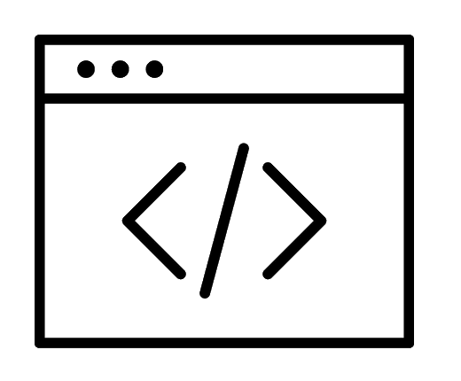
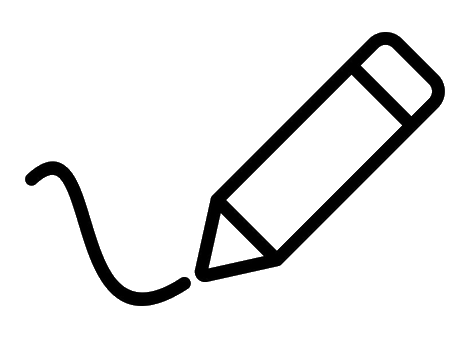

Projects

Aspiring Developer

Writer
Sports Fan
Trekkie
During the COVID-19 quarantine, I was eager to keep myself productive, occupied and connected with friends. That's how The Jersey Tuck Podcast was born. It became more than just a way to pass the time—it was a chance to engage with different aspects of the sports world that we didn’t typically follow. As the host and creator, I took on a variety of roles: writing scripts, recording episodes, editing content, and even creating the artwork and sound stingers used in the show. I launched the podcast across several platforms, including Spotify, YouTube, and Twitch. The project taught me a lot about media production, collaboration, and multi-platform content distribution.
Upon a quick initial look, I was unable to find a digital baseball tool that is readily available, and allowed fans to engage in the classic experience that I wanted. This project was a response to that absence. This Python-based program allows users to digitally score a baseball game in the traditional way, while introducing additional modern features like dynamic event logging and optional pitch-tracking. With each at-bat, users can input real-time data to keep track of scores and game progress, just like an official scorekeeper would. Developing this program helped me enhance my Python skills while incorporating my passion for sports. It also gave me valuable experience in understanding logic and translating that into code.
My Text RPG is a nod to the classic role-playing games that fueled my imagination growing up. Within Python, I'm constructing a game that offers a text-based adventure, complete with an inventory system, dynamic narrative, and a character reputation system. Though very rudimentary in this stage, it charmingly mimics the experience of a choose-your-own-adventure book. In building this project, I honed my Python coding skills and experimented with basic game logic, dynamic storytelling, and user interaction. I focused on making it as immersive as possible within the constraints of a text-based environment, bringing together my love for programming and world-building in a project that I hope to continue expanding in the future.